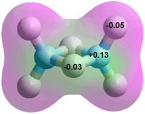
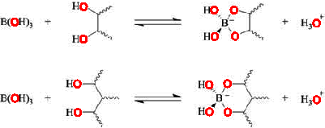

Tetraborate anion, [B4O5(OH)4]2−, as it occurs in
the colorless, but soluble, crystalline borax e
Boron's attraction to oxygen is central to its chemistry.
Boron is a rare, light, electron-deficient (low electronegativity), non-metallic element naturally found as the water-soluble borates in salt beds, desert lake and salt-marsh deposits, hot spring effluvia, and seawater. It has just three electrons in its outer shell electrons; (1s)2(2s)2(2p)1. Boron in these covalently bonded oxides occurs in trigonal-planar BO3 and tetrahedral BO4− units and can rearrange. The boron-oxygen bond very strong (523 kJ ˣ mol−1) and not easily broken. Boron rarely obeys the octet rule and usually has six electrons (only) in three molecular orbitals (often each firmly attaching an oxygen atom), with an empty perpendicular 2pz orbital at right angles. Usually, with formal oxidation state III, boron does not form B3+ or ionic bonds. The formulas of boron compounds are often simplified and do not give their (more extensive) structural formula; e.g., boron trioxide (B2O3) is more accurately stated as (BO3/2)n. The nomenclature is often confusing or ambiguous, particularly in the older literature.
Boron trioxide (BO3/2, B2O3);
the boron atoms share the O atoms
Boroxol ring structure of boron trioxide
and within vitreous B2O3
Boron trioxide (diboron trioxide, boric anhydride, boron oxide, B2O3) is usually found as a glassy white solid consisting of a mixture of ~75% boroxol rings
(B3O3, see right) and ~25% connecting triangular BO3 planar structures (see left). Its physical properties are sensitive to the presence of small amounts of residual water, b so much so that B2O3 has been used as a drying agent for solvents such as formic acid. Dry boron trioxide can only be prepared by prolonged heating (~300 °C), preferably under vacuum. The geometric and electronic structures and chemical bonding of a series of small boron oxide clusters (B2O3)n have been described. f
Boron trioxide is used in borosilicate glasses (like pyrex; ~13% B2O3, ~80% SiO2, ~4% Na2O, and ~2% Al2O3) that are durable, chemically resistant, and with a small coefficient of thermal expansion (3.3 ˣ 10−6 ˣ K−1), giving resistance to thermal shock and their utility as cookware and laboratory equipment.
Boron trioxide is produced by dehydrating borax (Na2[B4O5(OH)4].8H2O (also called sodium tetraborate octahydrate, see top right) with sulfuric acid in a fusion furnace. At temperatures above 750 °C, the molten metaboric acid (HBO2, B2O3(OH)3, melting point 176 °C, pKa 9.236, density 1784 kg ˣ m−3, see below right) separates from the solid sodium sulfate,
Na2[B4O5(OH)4].8H2O + H2SO4 → 4 HBO2 + 9 H2O + Na2SO4
and is then heat dried
2 HBO2 → B2O3 + H2O
Boron trioxide also forms when diborane (B2H6) reacts with oxygen in the air or trace amounts of moisture,
Diborane (B2H6); the central H atoms are covalently shared
by the boron atoms (three-center, two-electron bonds)

2 B2H 6 (g) + 3 O2 (g) → 2 B2O3 (s) + 6 H2 (g)
B2H6 (g) + 3 H2O (g) → B2O3 (s) + 6 H2 (g)
Boric acid, B(OH)3,
the lowest energy structure, C3h g
Boric acid B(OH)3, melting point 170.9 °C, boiling point 300 °C, density 1435 kg ˣ m−3, (also called orthoboric acid and boracic acid, see right) has strongly held oxygen atoms. In contrast to aluminum hydroxide Al(OH)3, it is unreactive with hydrochloric acid (3 HCl + Al(OH)3 → AlCl3 + 3 H2O). It has three donor and three acceptor hydrogen-bonding positions compared with two each for water. The central boron atom has just six electrons in its outer shell, with an empty 2pz orbital. Although the H-atoms are as positive as those in water, the oxygen atoms are significantly less negative making B(OH)3 relatively weakly hydrated, compared with the bulk water and with a tendency to lose water molecules. c Water molecules are attracted by the boric acid's atomic charges but prefer to hydrogen-bond amongst themselves rather than hydrogen bonding to the B-OH groups. Boric acid can be viewed as a hydrate of boron trioxide, but the water moles are not typical waters of hydration.
2 B(OH)3 ≡ B2O3.3H2O
Boric acid may be prepared by treating borax with hydrochloric acid,
Na2[B4O5(OH)4].8H2O + 2 HCl → 4 B(OH)3 + 2 NaCl + 5 H2O
Boron trioxide (B2O3) exothermically reacts with water to form crystalline boric acid
B2O3 (glassy) + 3 H2O → 2 B(OH)3 ΔH = -76.5 kJ ˣ mol−1
B2O3 (crystalline) + 3 H2O → 2 B(OH)3 ΔH = -58.2 kJ ˣ mol−1
above 135-140 °C, boric acid forms metaboric acid, B3O3(OH)3,
3 B(OH)3 → B3O3(OH)3 + 3 H2O
Boric acid is not gelatinous like aluminum hydroxide but crystallizes as waxy sheets of coplanar B(OH)3 molecules linked by hydrogen bonds. These sheets are held together by weak van der Waals forces, allowing easy cleavage of the crystals into flakes with a slippery feel. Boric acid may be formed by dissociative hydrolysis on the dissolution of borax (see the structure top right, where the contained boric acid (top right and bottom left) and borate structures (top left and bottom right) may be discerned
Na2[B4O5(OH)4].8H2O  2 B(OH)3 + 2 Na+B(OH)4−+ 3 H2O
2 B(OH)3 + 2 Na+B(OH)4−+ 3 H2O
The reverse condensation reactions of boric acid and borate form aqueous polyborate species. As the dissociated product contains equimolar concentrations of both the acid and its base, the solution's pH is controlled at the pKa , so explaining its use in buffers, despite its varying pKa.
Borate anion, B(OH)4−
Boric acid (B(OH)3) does not dissociate to give hydrogen ions, so it does not form salts such as B(OH)2O−, B(OH)(O−)2, or BO33−. This is true of all boron-attached hydroxyl groups. However, B(OH)3 acts as a Lewis acid with a pKa of 8.92- 9.24. a Lewis acids do not give up a proton by direct dissociation but by either consuming a strong base like a hydroxide ion or reacting with water to release a proton.
B(OH)3 + OH−  B(OH)4− pKa = 8.92 - 9.24
B(OH)4− pKa = 8.92 - 9.24
B(OH)3 + 2 H2O  B(OH)4− + H3O+ pKa = 8.92 - 9.24
B(OH)4− + H3O+ pKa = 8.92 - 9.24
The reaction is favorable because the boron atom has an empty perpendicular 2pz orbital that may react with one of the electron lone pairs in water, a reaction common in boron chemistry. The pKa varies as these reactions are sensitive to temperature, ionic strength, and concentration because of boric acid's polymerization above 0.02 M.
Boric acid, B(OH)3 crystalline sheet showing H-bonded dimers
The (dehydration-led) polymerization of more concentrated boric acid (>~0.025 mol ˣ L−1) leads to the complex formation of linear dimers (B2O(OH)4) and trimers (B3O2(OH)5), metaboric acid (B3O3(OH)3), tetraborate ( [B4O5(OH)4]2−), pentaborate (B5O6(OH)4−) and many similar materials,d e.g.
2 B(OH)3 → B(OH)2-O-B(OH)2 + H2O
2 B(OH)3 + H2O → B2O(OH)5− + H3O+
2 B(OH)3 + 3 H2O → B2O(OH)62− + 2 H3O+
3 B(OH)3 → B(OH)2-O-BOH-O-B(OH)2 + 2 H2O
3 B(OH)3 → B3O3(OH)3 + 3 H2O
3 B(OH)3 → B3O3(OH)4− + H3O+ + H2O
3 B(OH)3 + H2O → B3O3(OH)52− + 2 H3O+
3 B(OH)3 + 3 H2O → B3O3(OH)63− + 3 H3O+
4 B(OH)3 → B4O5(OH)4]2−+ 2 H3O+ + H2O
5 B(OH)3 → B5O6(OH)4− + H3O+ + 4 H2O
5 B(OH)3 → B5O6(OH)63− + 3 H3O+
Combinations of these reactions can also occur, e.g.,
2 B2O(OH)5− → B4O5(OH)4]2−+ 3 H2O
The structural form of these borates involves additional water of hydration, e.g., Na+B5O6(OH)4−.3H2O, sodium pentaborate trihydrate; and Na+2B4O5(OH)42−.8H2O disodium tetraborate octahydrate, (see top right, also unfortunately known as 'borax decahydrate'). Different borates may be discerned by the use of 11B nuclear magnetic resonance (NMR). More concentrated solutions are highly viscous, slow to equilibrate, and may slightly etch glass.
Pentaborate, B5O6(OH)4−
Distribution of borate species in aqueous solution as a function of pH b
In dilute solutions, 18 water molecules c surround the boric acid, indicative of its presence within clathrate 512 cavities; the two missing water molecules being replaced by the electron-accepting ability of the boron's empty 2pz orbital and the polar attraction of the boric acid. This hypothesis is supported by the solubility of boric acid in water increasing with the addition of chaotropic salts such as KCl, KNO3, RbCl, and K2SO4, in contrast to the addition of kosmotropic salts, such as LiCl, NaCl, and CaCl2, that lowers this solubility.
Inositol tri-borate ester
Boric acid (B(OH)3) reacts with poly-hydroxy compounds, such as cis-diols and 1, 3-diols. In this reaction, the Lewis pKa shifts to about pH 5.

Borax, in small amounts, is necessary for plant growth. h It also appears useful in human and animal nutrition at very low levels. i
[Back to Top  ]
]
closo-Dodecaborate anion [B12H12]2−
The charge of the anionic pair of electrons is shared amongst the 12 H atoms (-0.170 each at the extremities of the dodecahedron; the boron atoms have charges of +0.03 each). The B-H and B-B distances are 0.12 nm and 0.18 nm, respectively. Every B-H pair contributes 4 electrons to the overall bonding with 2 electrons making up each of the 12 B-H bonds. 13 electron pairs are required for the spherical aromatic structure of the boron dodecahedron (polyhedral skeletal electron pair theory, Wade's rules).
The disodium dodecahydro-closo-dodecaborate salt, (Na+)2[B12H12]2− (closo- ≡ 'caged') is a highly water-soluble salt with the anion having the structure of a regular icosahedron. j It is the most stable among the polyhedral boron hydrides (and is claimed to be the most stable molecule known to chemistry), being stable to high temperature (>1000 K), on heating in strong aqueous NaOH, and on heating in HCl up to 95 °C. Its acid form (H3O+)2[B12H12]2− displays the properties of a strong acid comparable in strength with sulfuric acid. It possesses no reversible redox behavior. Many derivatives of the [B12H12]2− anion have been synthesized with bonds such as boron–carbon, boron-nitrogen, and boron-oxygen.
Being small and spherical (radius = 0.32 nm), and with low charge density, the dodecaborate anion is strongly chaotropic (superchaotropic [4064]), fits well with the low-density water structure (ΔGhyd = -586 kJ ˣ mol−1, TΔShyd = -21 kJ ˣ mol−1, ΔHhyd = -607 kJ ˣ mol−1), and self-assembles into aggregates.
[Back to Top  ]
]
a A. Lopalco, A. A. Lopedota, V. Laquintana, N. Denora and V. J. Stella, Boric acid, a Lewis acid with unique and unusual properties: formulation implications, Journal of Pharmaceutical Sciences, 109 (2020) 2375-2386. [Back]
b D. M. Schubert, Boric oxide, boric acid, and borates, Ullmann's Encyclopedia of Industrial Chemistry, Wiley-VCH Verlag GmbH & Co. KGaA, Weinheim, (2015) DOI: 10.1002/14356007.a04_263.pub2. [Back]
c Y. Zhou, T. Yamaguchi, W. Zhang, K. Ikeda, K. Yoshid, F. Zhua and H. Liu, The structural elucidation of aqueous H3BO3 solutions by DFT and neutron scattering studies, Physical Chemistry Chemical Physics, 22 (2020) 17160-17170. [Back]
d L. M. S. G. A. Applegarth, C. C. Pye, J. S. Cox and P. R. Tremaine, Raman spectroscopic and ab initio investigation of aqueous boric acid, borate, and polyborate speciation from 25 to 80 °C, Industrial & Engineering Chemistry Research, 2017, 56, 47, 13983–13996 10.1021/acs.iecr.7b03316. [Back]
e The structures on this page were optimized using the Restricted Hartree-Fock wave function (RHF) using the 6-31G** basis set. [Back]
f L. Li and L. Cheng, First principle structural determination of (B2O3)n (n = 1–6) clusters: From planar to cage, Journal of Chemical Physics, 138 (2013) 094312. [Back]
g C. C. Pye, An ab initio study of boric acid, borate, and their interconversion, in Y. A. Wang et al. (eds.), Concepts, Methods and Applications of Quantum Systems in Chemistry and Physics, Progress in Theoretical Chemistry and Physics, Springer International Publishing AG, 31 (2018) DOI: 10.1007/978-3-319-74582-4_8. [Back]
h S. A. G. Nejad and H. Etesami, The importance of boron in plant nutrition, in R. Deshmukh, D. K. Tripathi and G. Guerriero, (eds), Metalloids in Plants: Advances and Future Prospects, ch. 20 (2020) DOI: 10.1002/9781119487210.ch20. [Back]
i F. H. Nielsen and C. D Eckhert, Boron, Advances in Nutrition, 11 (2020) 461-462. [Back]
j This is the most stable of several closo-boron clusters, e.g., [B6H6]2−, [B7H7]2−, [B9H9]2−. [Back]
[Back to Top  ]
]
Home | Site Index| Aqueous H2S | Aqueous hydrogen halides | Aqueous ammonia | LSBU | Top
This page was established in 2020 and last updated by Martin Chaplin on 15 November, 2021